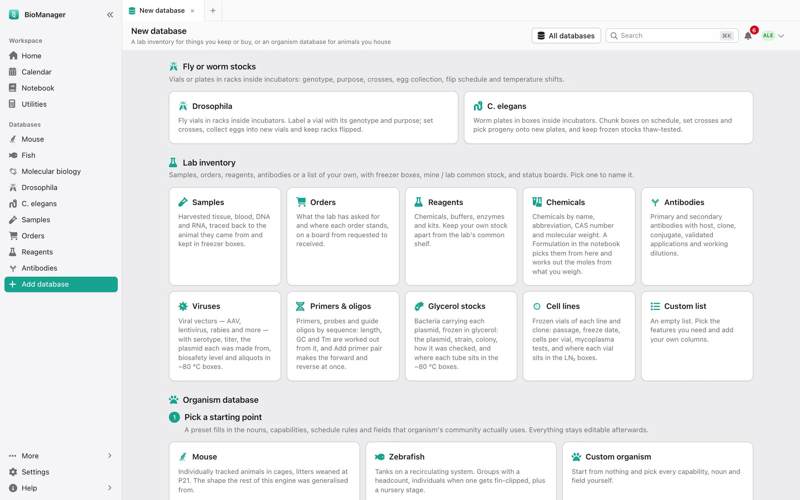

Your databases
Any other organism
A database for any other organism, described in your own words.
Add database in the sidebar builds a database for anything else — Xenopus, axolotls, cell lines, yeast. Start from a mouse-like, zebrafish-like or blank organism and describe it:
- Name and vocabulary — what to call an animal, its housing (tank, cage, plate), a line, a birth cohort and a breeding event, and whether age is shown in days, weeks, days post-fertilisation, generations or passages (then Age shows the record's own Passage or Generation column, P12). The whole interface then speaks your words.
- How animals are counted — individuals, groups with a headcount, or groups with individuals when needed.
- What it does — tick what you need: housing and rack positions, lines, crosses and cohorts, pedigree, genotyping, schedules worked out from dates, environment readings, health, weights, a cull log, cryo stocks and more. Each has a one-line hint on the page. On the Schedule, Done takes the day it was really done; each rule counts from its own last Done, so feeding every two days doesn't restart a split due every four.
- Your own columns — text, long text, a genotype code, number, date, a choice, yes/no, a lab member, a link to a line, or a web link. They are edited in the sheet like the others, and Set field sets one on every ticked row.
- Who it is for — Just me (a personal database only you and admins see) or The whole lab.
Change any of it later under the database's Configure, without losing records. The same page offers inventories (samples, orders, reagents, antibodies, viruses, primers & oligos, cell lines, a custom list) and fly or worm stock databases. An icon is picked from a grid of the icons themselves; hover over one for its name.

Its Experiments tab works as the mouse colony's does, for your animals, groups and cohorts, and can start with a housing's animals: see Experiments.
Troubleshooting
A colleague's database isn't in my sidebar
It may be their personal one (Just you on its tile), which only they and admins see, or an admin may have switched it off.